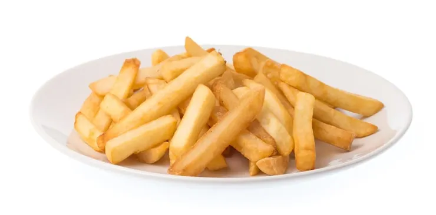

Receta de papas fritas caseras

• 3 ó 4 papas (300g.)
• 4 dientes de ajo
• Aceite de oliva
• Sal
1. Calentar aceite en una sartén.
2. Añadir las papas cortadas, la sal y los ajos.
3. Freír al gusto.
4. Servir en plato.